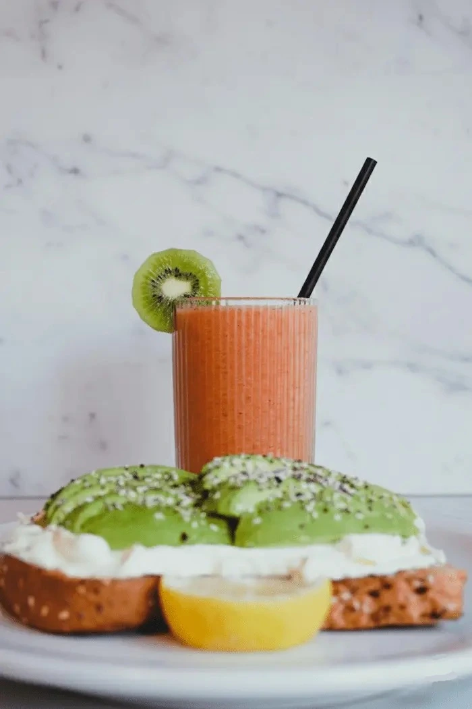
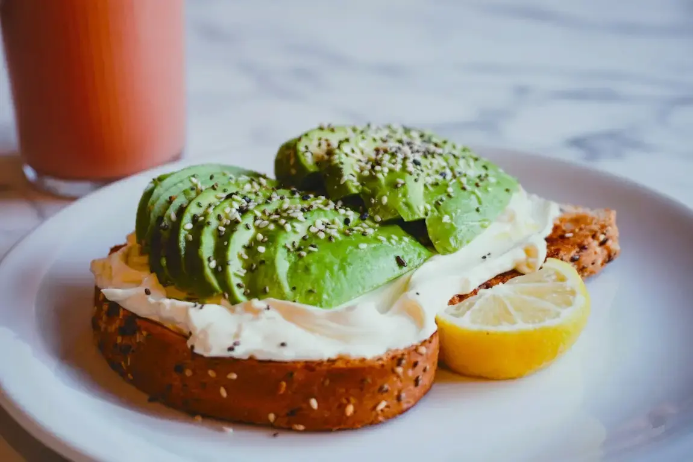
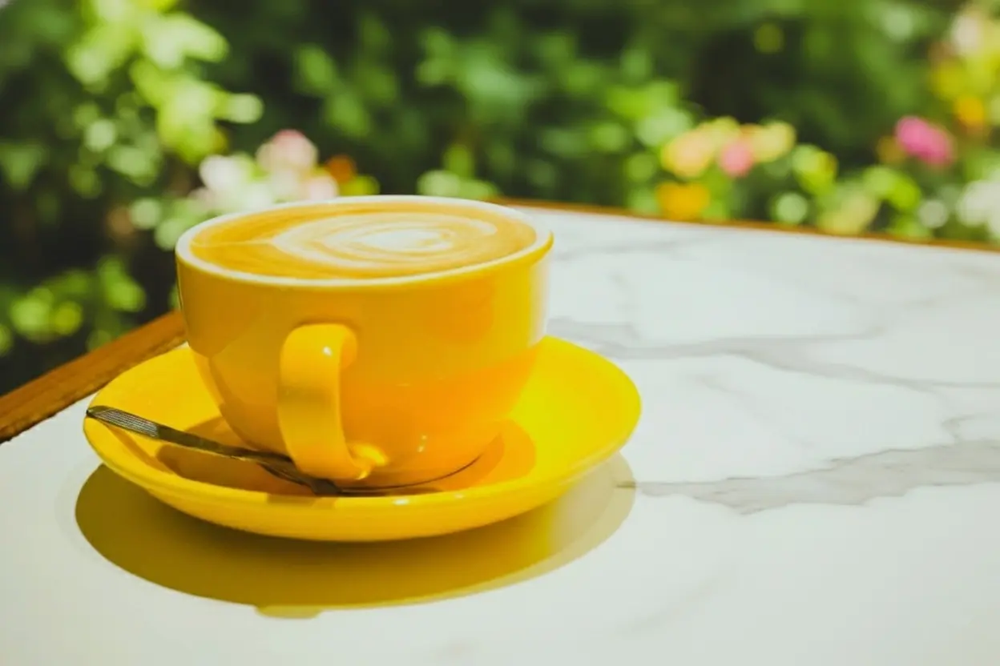
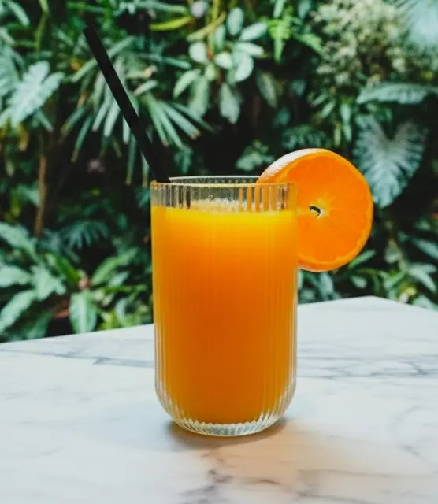
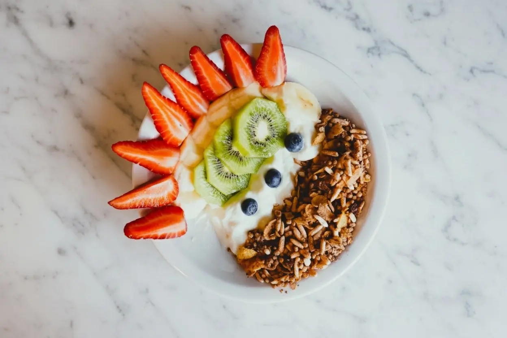
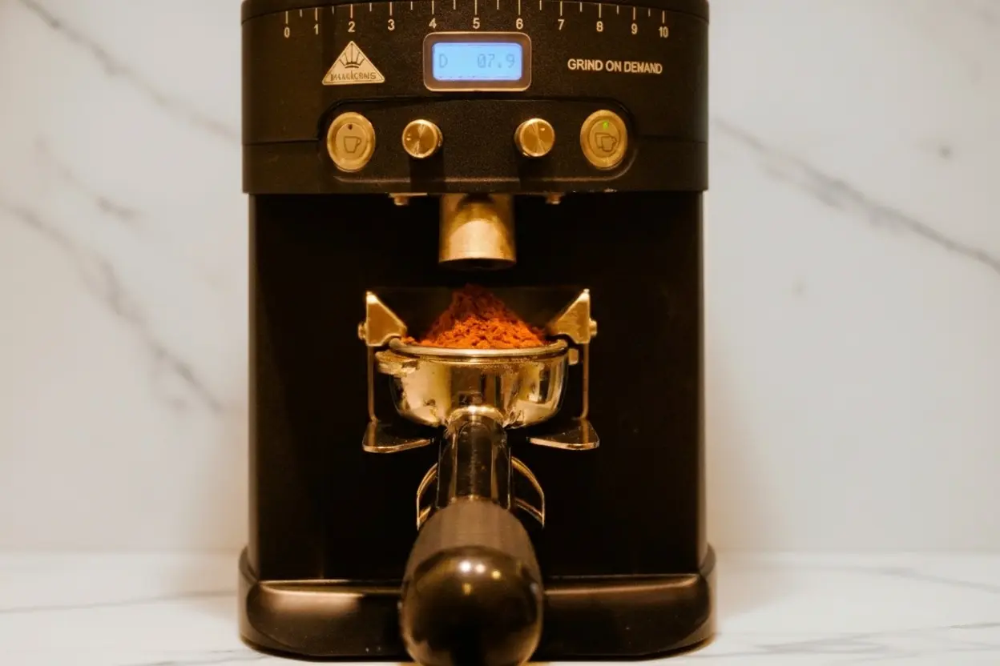
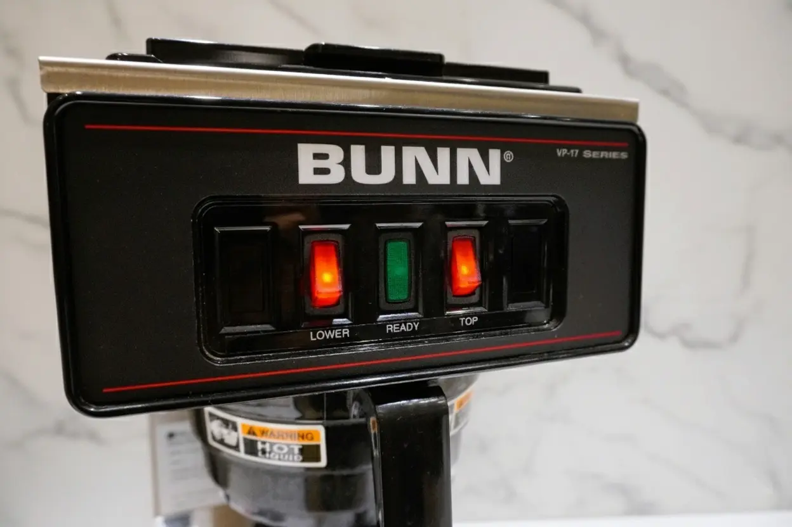
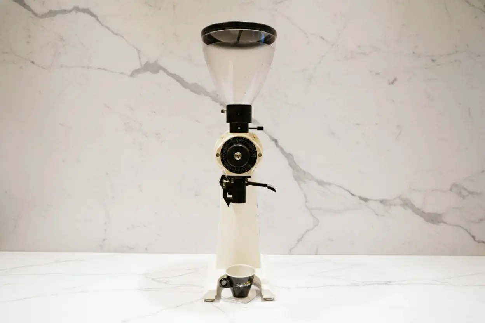
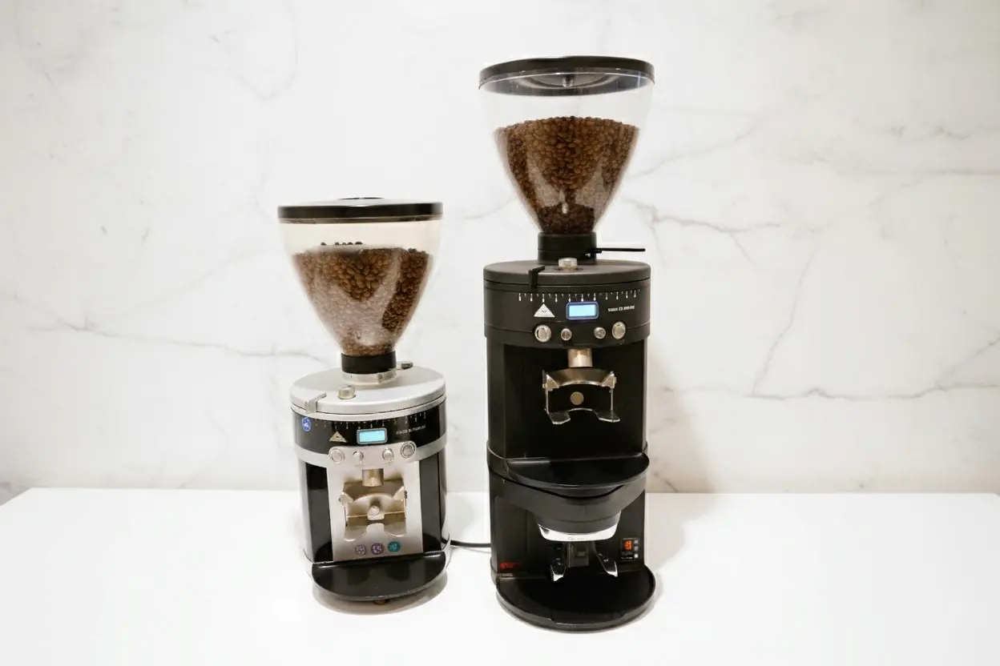
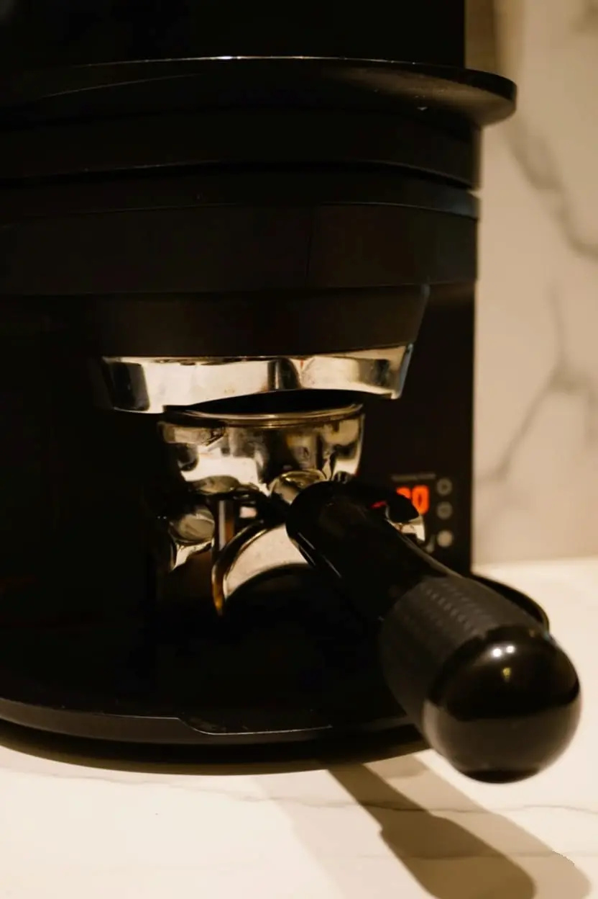

En Cafetino también podés llevar tu café especial donde quieras. Pasá, pedí tu bebida favorita y seguí tu día con el sabor de un café especial de verdad.

En Cafetino creemos que el café es una forma de arte, y nuestras herramientas son las pinceladas que nos ayudan a crear cada taza perfecta.
Contamos con equipos de precisión que nos permiten cuidar cada detalle del proceso: desde la molienda exacta hasta la textura ideal de la leche para el arte latte.





